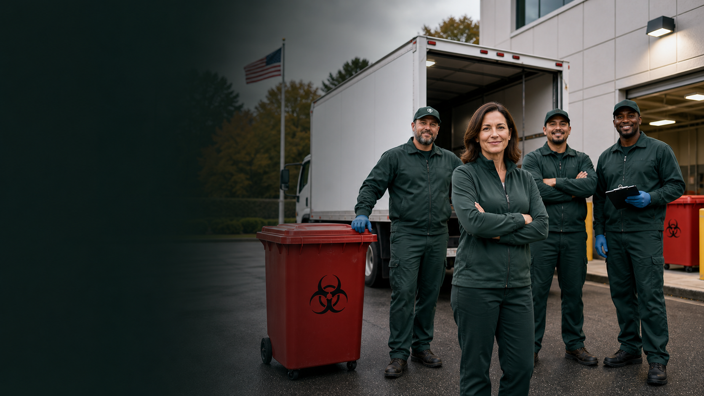

About
About United Medical Waste
An independently owned New England medical waste partner focused on service, compliance, and practical facility support.
Since 2010
Local service with regulated-waste discipline.
United Medical Waste supports healthcare teams that need dependable pickup and clear records without feeling like a number in a national route system. The redesigned demo gives that story more weight with operational imagery, process clarity, and stronger proof points.
For launch, this page can be expanded with leadership, licenses, facility photos, fleet photos, and verified client testimonials.